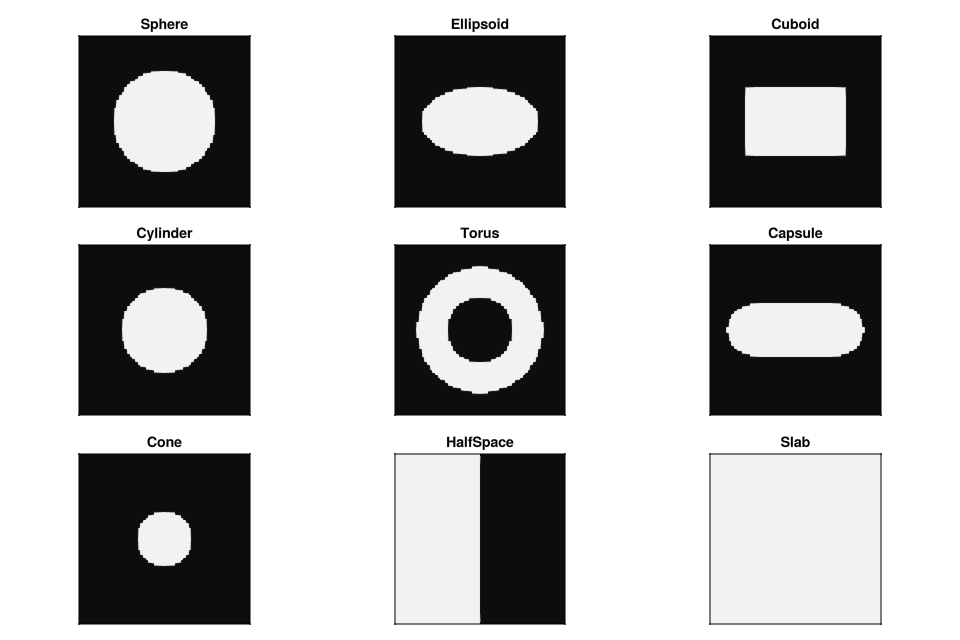

Shapes
Nine primitives are built in. All accept a fill value as their last positional argument; pass a fill function instead for spatial variation.

Reference
FillableSphere(center, radius, fill_val; interpolation=LinearInterpolation())
FillableEllipsoid(center, (rx, ry, rz), fill_val; interpolation=LinearInterpolation())
FillableCuboid(center, (lx, ly, lz), fill_val; interpolation=LinearInterpolation())
FillableCylinder(center, radius, half_height, fill_val; axis=3, interpolation=LinearInterpolation())
FillableTorus(center, major_radius, minor_radius, fill_val; axis=3, interpolation=LinearInterpolation())
FillableCapsule(point_a, point_b, radius, fill_val; interpolation=LinearInterpolation())
FillableCone(center, base_radius, top_radius, half_height, fill_val; axis=3, interpolation=LinearInterpolation())
FillableSlab(point, normal, half_thickness, fill_val; interpolation=LinearInterpolation())
FillableHalfSpace(point, normal, fill_val; interpolation=LinearInterpolation())FillableSphere is a convenience constructor for FillableEllipsoid with equal radii. FillableCube is a convenience constructor for FillableCuboid with equal side lengths.
FillableCone with top_radius = 0 gives a true cone; unequal nonzero values give a frustum.
FillableHalfSpace fills everything on the inward side of a plane. FillableSlab is two parallel half-spaces: a finite-thickness infinite sheet.
The axis parameter (1 = x, 2 = y, 3 = z) sets the longitudinal axis for shapes that have one.
Local coordinates
Each shape passes a 3-tuple of local coordinates to its fill function. The coordinate system differs per shape:
| Shape | Local coords |
|---|---|
FillableEllipsoid | (x-cx)/rx, (y-cy)/ry, (z-cz)/rz (unit sphere at surface) |
FillableCuboid | (x-cx)/hlx, (y-cy)/hly, (z-cz)/hlz (±1 at each face) |
FillableCylinder | (r/radius, axial/half_height, 0) |
FillableCone | (r/r_at_height, axial/half_height, 0) |
FillableTorus | (rho/R, dist_to_tube/r, 0) |
FillableCapsule | (dist_to_segment/radius, t_along_segment, 0) |
FillableHalfSpace | (signed_distance, 0, 0) |
FillableSlab | (dist_from_midplane/half_thickness, 0, 0) (±1 at each face) |
Signed distance functions
Most shapes have an exact SDF, which allows AdaptiveAntiAliasing to skip the inner stencil for voxels clearly inside or outside the surface.
| Shape | Exact SDF |
|---|---|
FillableSphere / FillableEllipsoid | No (approximation) |
FillableCuboid / FillableCube | Yes |
FillableCylinder | Yes |
FillableTorus | Yes |
FillableCapsule | Yes |
FillableCone / frustum | No |
FillableSlab | Yes |
FillableHalfSpace | Yes |
See the API reference for full signatures.